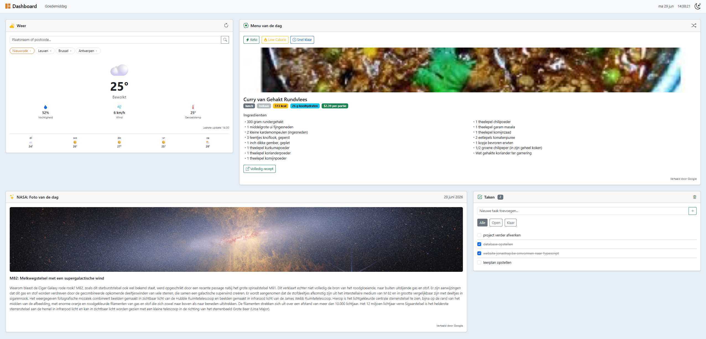

Dit dashboard is een persoonlijk project: een single-page webapplicatie die vier dagelijkse noden samenbrengt op één centrale pagina. De vier widgets tonen het actuele weerbericht voor opgeslagen locaties, een dagelijks avondmaalrecept met filters voor dieet en bereidingstijd, de NASA-foto van de dag met uitleg, en een eenvoudig takenbeheer.
Het project dient als demonstratiestuk van mijn vaardigheden in webontwikkeling en API-integratie. De nadruk lag bewust op een nette, professionele uitwerking die de geleerde concepten concreet toepast: een duidelijke architectuur, type-veiligheid, integratie met externe API's en degelijke foutafhandeling.
De volledige broncode van dit project staat publiek op GitHub, zodat ze altijd terug te vinden is: github.com/jonastrapmore/jonastrap-projecten/tree/main/dashboard
Ik koppel dit project aan dit doel omdat ik de technologie en de werkwijze doelbewust heb afgestemd op wat de toepassing nodig had, en de oplossing onderhoudbaar heb gehouden. Hieronder de twee kernpunten van het doel.
Het dashboard is een frontend-webapplicatie die meerdere API's combineert. Ik koos een stack en omgeving die daar precies bij passen:
| Onderdeel | Keuze | Waarom past dit bij de toepassing |
|---|---|---|
| Build tool | Vite | Snelle ontwikkelserver, native TypeScript en een eenvoudige statische build voor de hosting. |
| Taal | TypeScript | Type-veiligheid en zelfdocumenterende code voor een project dat met meerdere API's groeit. |
| UI-framework | Bootstrap 5 | Kant-en-klare grid en dark mode, zodat een verzorgde, responsieve UI snel klaar is. |
| Opslag | localStorage | Lichte persistentie die past bij een frontend-only app zonder backend. |
| Recept-API | Spoonacular | Bewust gekozen na TheMealDB, omdat enkel Spoonacular voedingswaarde en prijs levert voor de filters. |
/dashboard/) heb geplaatst.Ik bouwde de oplossing zo op dat iemand anders ze vlot kan begrijpen, aanpassen en uitbreiden:
.gitignore, zodat het project net en deelbaar blijft.
Afbeelding 1: het dashboard, gebouwd met de gekozen stack (Vite, TypeScript, Bootstrap).
Elke widget volgt dezelfde opbouw met sprekende methodenamen. Een collega die één widget leest, begrijpt meteen de andere:
export class RecipeWidget extends CustomElement {
constructor() {
super(HTML);
// luisteraars koppelen en meteen een recept laden
}
async #getRandomRecipe() { /* haalt een recept op, rekening houdend met de filters */ }
async #showMeal(recipe: Recipe) { /* vult de kaart met het recept */ }
async #renderIngredients(recipe: Recipe) { /* bouwt de ingredientenlijst op */ }
#showError(bericht: string) { /* toont een nette foutmelding */ }
}
Codefragment uit src/components/recipeWidget/recipeWidget.ts.
De duidelijke laagopbouw maakt het project overzichtelijk en onderhoudbaar:
dashboard/
src/
components/ widgets en navbar (custom elements)
data/ persistence providers
effects/ thema-beheer en de gedeelde vertaalhulp
models/ datamodellen (Task, SavedLocation)
pages/ de dashboardpagina
router/ Router, Page en CustomElement basisklassen
main.ts registratie van de widgets en de routes
style.css
index.html
tsconfig.json
vite.config.ts
De gekozen stack paste goed bij de toepassing: Vite gaf me een snelle ontwikkelomgeving, TypeScript hield de groeiende code beheersbaar, en Bootstrap leverde snel een verzorgde, responsieve interface. Door overal hetzelfde patroon te gebruiken, bleef de oplossing overzichtelijk en uitbreidbaar.
Ik leerde dat afstemmen op de toepassing een doorlopende keuze is, geen eenmalige beslissing. Toen TheMealDB niet voldeed (geen voedingswaarde of prijs voor de filters), heb ik bewust een andere API gekozen die wél bij de eisen paste. Ook besefte ik hoe sterk documentatie en een vaste structuur de onderhoudbaarheid bepalen: comments, types en een README maken het verschil voor wie later met de code werkt.
Een afweging was frontend-only werken zonder backend. Dat past bij de schaal van het
project, maar betekent ook dat API-sleutels in de browser belanden. Voor de
hosting moest ik de omgeving afstemmen op de submap (/dashboard/) door
het basis-pad in de build aan te passen, anders vond de browser de bestanden niet.
Dit project toont de twee kernpunten van het doel aan: ik koos een programmeeromgeving (Vite, TypeScript, Bootstrap, localStorage, Spoonacular) die past bij een frontend-dashboard dat meerdere API's combineert, en ik maakte de oplossing onderhoudbaar voor collega's door een consistent patroon, getypeerde code, gescheiden lagen en degelijke documentatie.